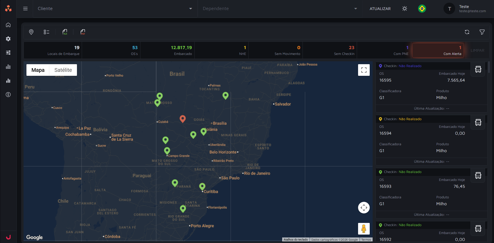
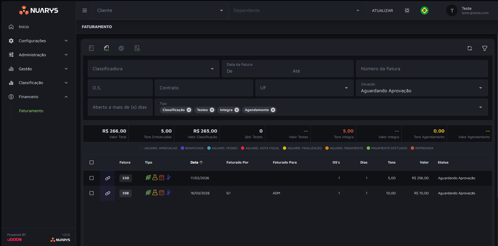

Um acesso por classificadora
Cada sistema tem login, interface e exportação próprios. Para saber o que está acontecendo, você precisa abrir todos, um por um.
Chega de abrir sistema por sistema para ter uma visão completa da operação. O Nuarys reúne tudo em um único lugar, sem múltiplos acessos, sem retrabalho, sem perder tempo, entregando à sua operação a clareza que ela precisa para decidir bem.
O problema
Cada classificadora tem seu próprio acesso, seu próprio formato, sua própria lógica. Para ter uma visão completa, você precisa abrir tudo e ainda assim montar o quebra-cabeça na mão.
Cada sistema tem login, interface e exportação próprios. Para saber o que está acontecendo, você precisa abrir todos, um por um.
Sem um lugar central, o jeito é exportar, copiar e colar. O resultado chega tarde, com risco de erro e sem rastreabilidade.
Enquanto a informação está sendo coletada e organizada, a operação já avançou. As decisões chegam tarde, baseadas em dados de ontem.
Cada sistema fala sua própria língua. Comparar classificadoras, safras ou períodos exige transformação manual, se é que acontece.
A solução
O Nuarys conecta cada classificadora e reúne tudo em uma visão só, sem múltiplos acessos, sem planilhas intermediárias, sem retrabalho.


Conecte todas as suas classificadoras ao Nuarys e acesse tudo de um lugar só. Chega de entrar sistema por sistema para ter uma visão completa da operação.
Cada classificadora entra com seu formato. O Nuarys normaliza e organiza tudo em um modelo consistente, sem nenhuma transformação ou consolidação manual.
Assim que os dados chegam, a visão está pronta. Sua equipe decide com a informação de agora, não com o relatório de ontem.
Funcionalidades
O Nuarys centraliza as informações que mais importam para a sua operação, da logística ao faturamento, em uma visão unificada e sempre atualizada.
Acompanhe o faturamento consolidado de todas as classificadoras em tempo real, sem depender de fechamentos manuais ou exportações.
Visibilidade completa sobre o fluxo de cargas da operação: onde cada uma está, qual o seu status e o que ainda está em aberto.
Parâmetros de qualidade e classificação unificados. Compare resultados entre unidades e identifique desvios antes que virem problema.
Métricas de volume e desempenho de cada classificadora lado a lado. Entenda onde a operação performa bem e onde há espaço para ganho.
Informações operacionais e administrativas centralizadas para que gestores tomem decisões com dados completos, sem depender de relatórios de terceiros.
Como funciona
Cada classificadora continua operando normalmente no seu próprio sistema. A integração com a API do Nuarys é o que permite reunir tudo em um único lugar para você.
Nenhuma mudança de processo, nenhuma migração. Suas classificadoras continuam usando os sistemas que já usam. O Nuarys se adapta a elas, não o contrário.
Zero impacto na operação existenteCada classificadora integra seu sistema com a API do Nuarys, estabelecendo uma troca de informações contínua. Os dados chegam normalizados e sempre atualizados.
Troca de dados via APIFaturamento, logística, controle: tudo consolidado em uma única visão. Sem abrir múltiplos sistemas, sem cruzar planilhas, sem perder tempo.
Uma visão, todas as classificadorasFale com nosso time e veja como o Nuarys centraliza a sua operação em um único lugar, sem mudar o que já funciona.
Respondemos em até 1 dia útil.